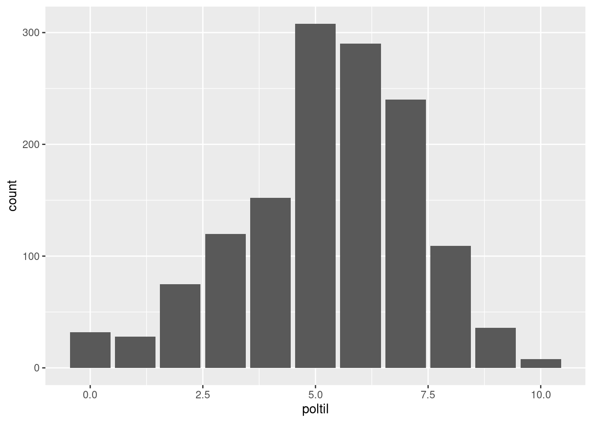
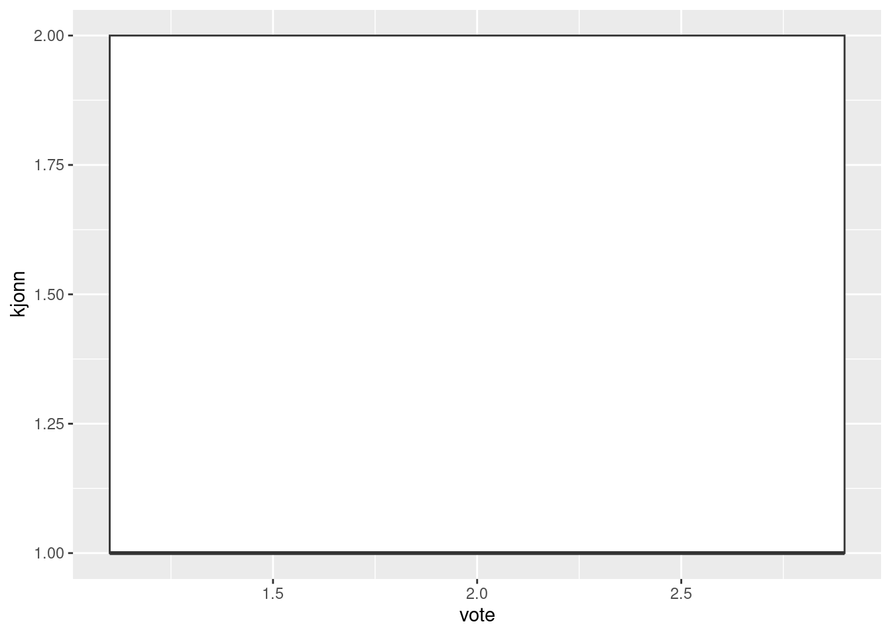
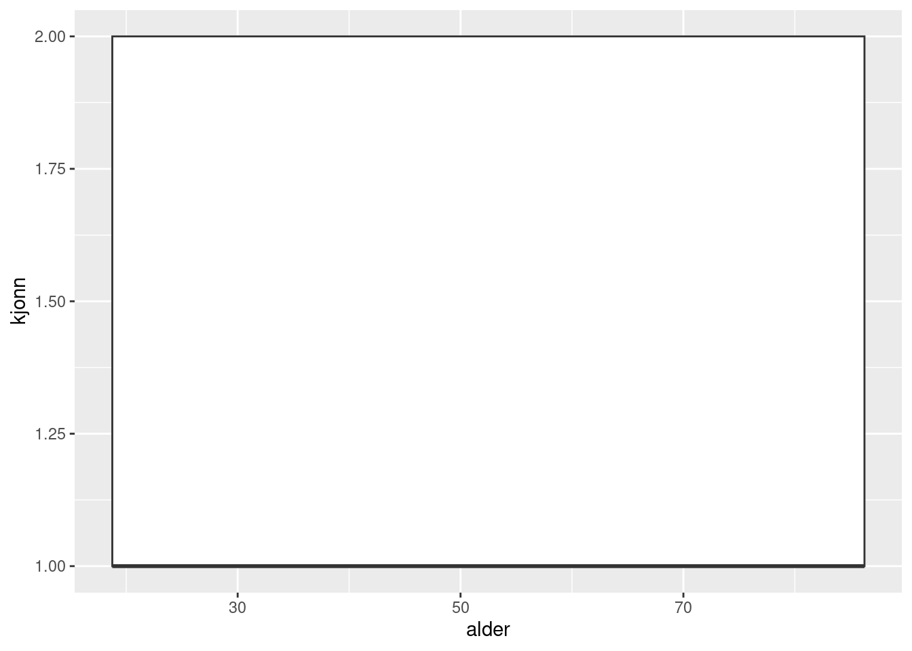
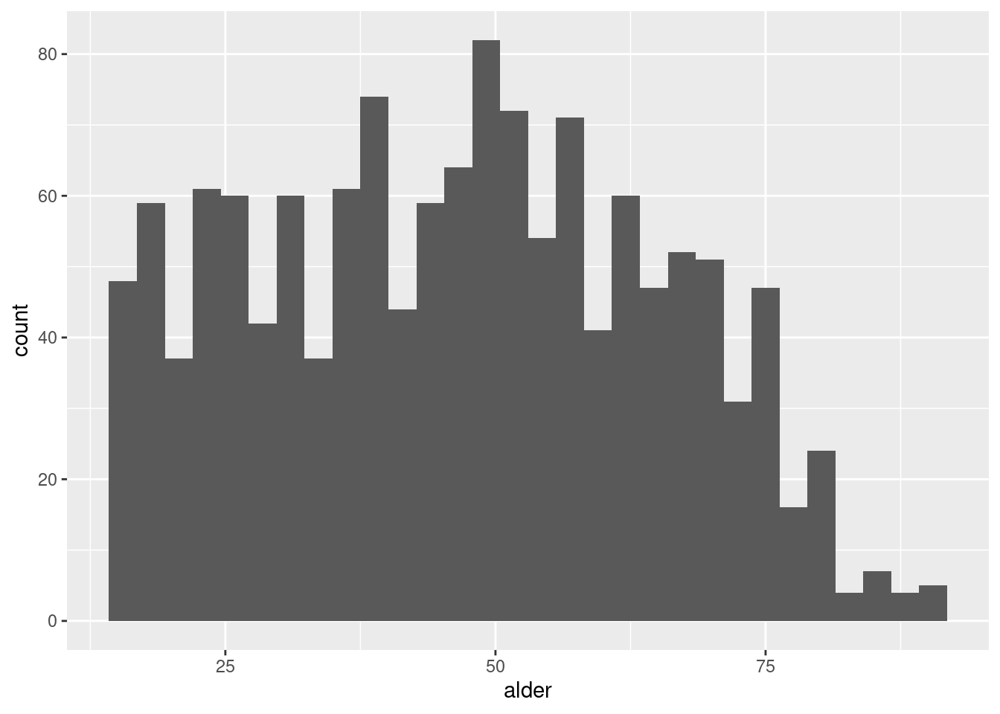

Code
── Attaching packages ─────────────────────────────────────── tidyverse 1.3.2 ──
✔ ggplot2 3.4.1 ✔ purrr 1.0.1
✔ tibble 3.1.8 ✔ dplyr 1.1.0
✔ tidyr 1.3.0 ✔ stringr 1.5.0
✔ readr 2.1.4 ✔ forcats 1.0.0
── Conflicts ────────────────────────────────────────── tidyverse_conflicts() ──
✖ dplyr::filter() masks stats::filter()
✖ dplyr::lag() masks stats::lag()Code
Min. 1st Qu. Median Mean 3rd Qu. Max. NA's
15.00 32.00 47.00 46.54 61.00 90.00 32 Code
# A tibble: 6 × 5
poltil kjonn aar_fodt vote alder
<dbl> <dbl> <dbl> <dbl> <dbl>
1 6 2 1961 1 57
2 7 1 1960 1 58
3 5 1 1956 1 62
4 2 1 1967 1 51
5 8 1 1972 1 46
6 2 1 1964 1 54Code
[1] "numeric"Code
[1] "numeric"Code
0 1 2 3 4 5 6 7 8 9 10
32 28 75 120 152 308 290 240 109 36 8 Code
[1] "1" "2" "3" "4" "5" "6" "7" "8" "9" "10"
[11] "11" "12" "13" "14" "15" "16" "17" "18" "19" "20"
[21] "21" "22" "23" "24" "25" "26" "27" "28" "29" "30"
[31] "31" "32" "33" "34" "35" "36" "37" "38" "39" "40"
[41] "41" "42" "43" "44" "45" "46" "47" "48" "49" "50"
[51] "51" "52" "53" "54" "55" "56" "57" "58" "59" "60"
[61] "61" "62" "63" "64" "65" "66" "67" "68" "69" "70"
[71] "71" "72" "73" "74" "75" "76" "77" "78" "79" "80"
[81] "81" "82" "83" "84" "85" "86" "87" "88" "89" "90"
[91] "91" "92" "93" "94" "95" "96" "97" "98" "99" "100"
[101] "101" "102" "103" "104" "105" "106" "107" "108" "109" "110"
[111] "111" "112" "113" "114" "115" "116" "117" "118" "119" "120"
[121] "121" "122" "123" "124" "125" "126" "127" "128" "129" "130"
[131] "131" "132" "133" "134" "135" "136" "137" "138" "139" "140"
[141] "141" "142" "143" "144" "145" "146" "147" "148" "149" "150"
[151] "151" "152" "153" "154" "155" "156" "157" "158" "159" "160"
[161] "161" "162" "163" "164" "165" "166" "167" "168" "169" "170"
[171] "171" "172" "173" "174" "175" "176" "177" "178" "179" "180"
[181] "181" "182" "183" "184" "185" "186" "187" "188" "189" "190"
[191] "191" "192" "193" "194" "195" "196" "197" "198" "199" "200"
[201] "201" "202" "203" "204" "205" "206" "207" "208" "209" "210"
[211] "211" "212" "213" "214" "215" "216" "217" "218" "219" "220"
[221] "221" "222" "223" "224" "225" "226" "227" "228" "229" "230"
[231] "231" "232" "233" "234" "235" "236" "237" "238" "239" "240"
[241] "241" "242" "243" "244" "245" "246" "247" "248" "249" "250"
[251] "251" "252" "253" "254" "255" "256" "257" "258" "259" "260"
[261] "261" "262" "263" "264" "265" "266" "267" "268" "269" "270"
[271] "271" "272" "273" "274" "275" "276" "277" "278" "279" "280"
[281] "281" "282" "283" "284" "285" "286" "287" "288" "289" "290"
[291] "291" "292" "293" "294" "295" "296" "297" "298" "299" "300"
[301] "301" "302" "303" "304" "305" "306" "307" "308" "309" "310"
[311] "311" "312" "313" "314" "315" "316" "317" "318" "319" "320"
[321] "321" "322" "323" "324" "325" "326" "327" "328" "329" "330"
[331] "331" "332" "333" "334" "335" "336" "337" "338" "339" "340"
[341] "341" "342" "343" "344" "345" "346" "347" "348" "349" "350"
[351] "351" "352" "353" "354" "355" "356" "357" "358" "359" "360"
[361] "361" "362" "363" "364" "365" "366" "367" "368" "369" "370"
[371] "371" "372" "373" "374" "375" "376" "377" "378" "379" "380"
[381] "381" "382" "383" "384" "385" "386" "387" "388" "389" "390"
[391] "391" "392" "393" "394" "395" "396" "397" "398" "399" "400"
[401] "401" "402" "403" "404" "405" "406" "407" "408" "409" "410"
[411] "411" "412" "413" "414" "415" "416" "417" "418" "419" "420"
[421] "421" "422" "423" "424" "425" "426" "427" "428" "429" "430"
[431] "431" "432" "433" "434" "435" "436" "437" "438" "439" "440"
[441] "441" "442" "443" "444" "445" "446" "447" "448" "449" "450"
[451] "451" "452" "453" "454" "455" "456" "457" "458" "459" "460"
[461] "461" "462" "463" "464" "465" "466" "467" "468" "469" "470"
[471] "471" "472" "473" "474" "475" "476" "477" "478" "479" "480"
[481] "481" "482" "483" "484" "485" "486" "487" "488" "489" "490"
[491] "491" "492" "493" "494" "495" "496" "497" "498" "499" "500"
[501] "501" "502" "503" "504" "505" "506" "507" "508" "509" "510"
[511] "511" "512" "513" "514" "515" "516" "517" "518" "519" "520"
[521] "521" "522" "523" "524" "525" "526" "527" "528" "529" "530"
[531] "531" "532" "533" "534" "535" "536" "537" "538" "539" "540"
[541] "541" "542" "543" "544" "545" "546" "547" "548" "549" "550"
[551] "551" "552" "553" "554" "555" "556" "557" "558" "559" "560"
[561] "561" "562" "563" "564" "565" "566" "567" "568" "569" "570"
[571] "571" "572" "573" "574" "575" "576" "577" "578" "579" "580"
[581] "581" "582" "583" "584" "585" "586" "587" "588" "589" "590"
[591] "591" "592" "593" "594" "595" "596" "597" "598" "599" "600"
[601] "601" "602" "603" "604" "605" "606" "607" "608" "609" "610"
[611] "611" "612" "613" "614" "615" "616" "617" "618" "619" "620"
[621] "621" "622" "623" "624" "625" "626" "627" "628" "629" "630"
[631] "631" "632" "633" "634" "635" "636" "637" "638" "639" "640"
[641] "641" "642" "643" "644" "645" "646" "647" "648" "649" "650"
[651] "651" "652" "653" "654" "655" "656" "657" "658" "659" "660"
[661] "661" "662" "663" "664" "665" "666" "667" "668" "669" "670"
[671] "671" "672" "673" "674" "675" "676" "677" "678" "679" "680"
[681] "681" "682" "683" "684" "685" "686" "687" "688" "689" "690"
[691] "691" "692" "693" "694" "695" "696" "697" "698" "699" "700"
[701] "701" "702" "703" "704" "705" "706" "707" "708" "709" "710"
[711] "711" "712" "713" "714" "715" "716" "717" "718" "719" "720"
[721] "721" "722" "723" "724" "725" "726" "727" "728" "729" "730"
[731] "731" "732" "733" "734" "735" "736" "737" "738" "739" "740"
[741] "741" "742" "743" "744" "745" "746" "747" "748" "749" "750"
[751] "751" "752" "753" "754" "755" "756" "757" "758" "759" "760"
[761] "761" "762" "763" "764" "765" "766" "767" "768" "769" "770"
[771] "771" "772" "773" "774" "775" "776" "777" "778" "779" "780"
[781] "781" "782" "783" "784" "785" "786" "787" "788" "789" "790"
[791] "791" "792" "793" "794" "795" "796" "797" "798" "799" "800"
[801] "801" "802" "803" "804" "805" "806" "807" "808" "809" "810"
[811] "811" "812" "813" "814" "815" "816" "817" "818" "819" "820"
[821] "821" "822" "823" "824" "825" "826" "827" "828" "829" "830"
[831] "831" "832" "833" "834" "835" "836" "837" "838" "839" "840"
[841] "841" "842" "843" "844" "845" "846" "847" "848" "849" "850"
[851] "851" "852" "853" "854" "855" "856" "857" "858" "859" "860"
[861] "861" "862" "863" "864" "865" "866" "867" "868" "869" "870"
[871] "871" "872" "873" "874" "875" "876" "877" "878" "879" "880"
[881] "881" "882" "883" "884" "885" "886" "887" "888" "889" "890"
[891] "891" "892" "893" "894" "895" "896" "897" "898" "899" "900"
[901] "901" "902" "903" "904" "905" "906" "907" "908" "909" "910"
[911] "911" "912" "913" "914" "915" "916" "917" "918" "919" "920"
[921] "921" "922" "923" "924" "925" "926" "927" "928" "929" "930"
[931] "931" "932" "933" "934" "935" "936" "937" "938" "939" "940"
[941] "941" "942" "943" "944" "945" "946" "947" "948" "949" "950"
[951] "951" "952" "953" "954" "955" "956" "957" "958" "959" "960"
[961] "961" "962" "963" "964" "965" "966" "967" "968" "969" "970"
[971] "971" "972" "973" "974" "975" "976" "977" "978" "979" "980"
[981] "981" "982" "983" "984" "985" "986" "987" "988" "989" "990"
[991] "991" "992" "993" "994" "995" "996" "997" "998" "999" "1000"
[1001] "1001" "1002" "1003" "1004" "1005" "1006" "1007" "1008" "1009" "1010"
[1011] "1011" "1012" "1013" "1014" "1015" "1016" "1017" "1018" "1019" "1020"
[1021] "1021" "1022" "1023" "1024" "1025" "1026" "1027" "1028" "1029" "1030"
[1031] "1031" "1032" "1033" "1034" "1035" "1036" "1037" "1038" "1039" "1040"
[1041] "1041" "1042" "1043" "1044" "1045" "1046" "1047" "1048" "1049" "1050"
[1051] "1051" "1052" "1053" "1054" "1055" "1056" "1057" "1058" "1059" "1060"
[1061] "1061" "1062" "1063" "1064" "1065" "1066" "1067" "1068" "1069" "1070"
[1071] "1071" "1072" "1073" "1074" "1075" "1076" "1077" "1078" "1079" "1080"
[1081] "1081" "1082" "1083" "1084" "1085" "1086" "1087" "1088" "1089" "1090"
[1091] "1091" "1092" "1093" "1094" "1095" "1096" "1097" "1098" "1099" "1100"
[1101] "1101" "1102" "1103" "1104" "1105" "1106" "1107" "1108" "1109" "1110"
[1111] "1111" "1112" "1113" "1114" "1115" "1116" "1117" "1118" "1119" "1120"
[1121] "1121" "1122" "1123" "1124" "1125" "1126" "1127" "1128" "1129" "1130"
[1131] "1131" "1132" "1133" "1134" "1135" "1136" "1137" "1138" "1139" "1140"
[1141] "1141" "1142" "1143" "1144" "1145" "1146" "1147" "1148" "1149" "1150"
[1151] "1151" "1152" "1153" "1154" "1155" "1156" "1157" "1158" "1159" "1160"
[1161] "1161" "1162" "1163" "1164" "1165" "1166" "1167" "1168" "1169" "1170"
[1171] "1171" "1172" "1173" "1174" "1175" "1176" "1177" "1178" "1179" "1180"
[1181] "1181" "1182" "1183" "1184" "1185" "1186" "1187" "1188" "1189" "1190"
[1191] "1191" "1192" "1193" "1194" "1195" "1196" "1197" "1198" "1199" "1200"
[1201] "1201" "1202" "1203" "1204" "1205" "1206" "1207" "1208" "1209" "1210"
[1211] "1211" "1212" "1213" "1214" "1215" "1216" "1217" "1218" "1219" "1220"
[1221] "1221" "1222" "1223" "1224" "1225" "1226" "1227" "1228" "1229" "1230"
[1231] "1231" "1232" "1233" "1234" "1235" "1236" "1237" "1238" "1239" "1240"
[1241] "1241" "1242" "1243" "1244" "1245" "1246" "1247" "1248" "1249" "1250"
[1251] "1251" "1252" "1253" "1254" "1255" "1256" "1257" "1258" "1259" "1260"
[1261] "1261" "1262" "1263" "1264" "1265" "1266" "1267" "1268" "1269" "1270"
[1271] "1271" "1272" "1273" "1274" "1275" "1276" "1277" "1278" "1279" "1280"
[1281] "1281" "1282" "1283" "1284" "1285" "1286" "1287" "1288" "1289" "1290"
[1291] "1291" "1292" "1293" "1294" "1295" "1296" "1297" "1298" "1299" "1300"
[1301] "1301" "1302" "1303" "1304" "1305" "1306" "1307" "1308" "1309" "1310"
[1311] "1311" "1312" "1313" "1314" "1315" "1316" "1317" "1318" "1319" "1320"
[1321] "1321" "1322" "1323" "1324" "1325" "1326" "1327" "1328" "1329" "1330"
[1331] "1331" "1332" "1333" "1334" "1335" "1336" "1337" "1338" "1339" "1340"
[1341] "1341" "1342" "1343" "1344" "1345" "1346" "1347" "1348" "1349" "1350"
[1351] "1351" "1352" "1353" "1354" "1355" "1356" "1357" "1358" "1359" "1360"
[1361] "1361" "1362" "1363" "1364" "1365" "1366" "1367" "1368" "1369" "1370"
[1371] "1371" "1372" "1373" "1374" "1375" "1376" "1377" "1378" "1379" "1380"
[1381] "1381" "1382" "1383" "1384" "1385" "1386" "1387" "1388" "1389" "1390"
[1391] "1391" "1392" "1393" "1394" "1395" "1396" "1397" "1398" "1399" "1400"
[1401] "1401" "1402" "1403" "1404" "1405" "1406"Code
Warning: Removed 8 rows containing non-finite values (`stat_count()`).
Code
Warning: Continuous x aesthetic
ℹ did you forget `aes(group = ...)`?Warning: Removed 1 rows containing missing values (`stat_boxplot()`).
Code
Warning: Continuous x aesthetic
ℹ did you forget `aes(group = ...)`?Warning: Removed 32 rows containing missing values (`stat_boxplot()`).
Code
`stat_bin()` using `bins = 30`. Pick better value with `binwidth`.Warning: Removed 32 rows containing non-finite values (`stat_bin()`).Warning: The following aesthetics were dropped during statistical transformation: fill
ℹ This can happen when ggplot fails to infer the correct grouping structure in
the data.
ℹ Did you forget to specify a `group` aesthetic or to convert a numerical
variable into a factor?